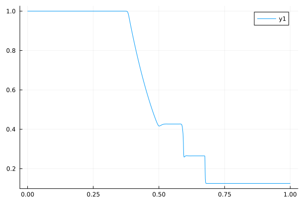
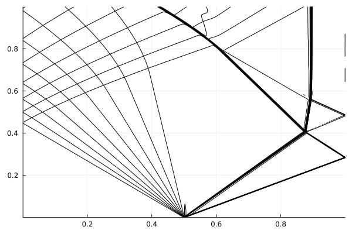
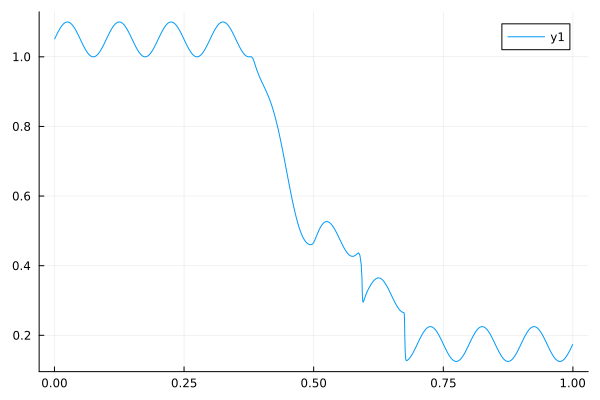
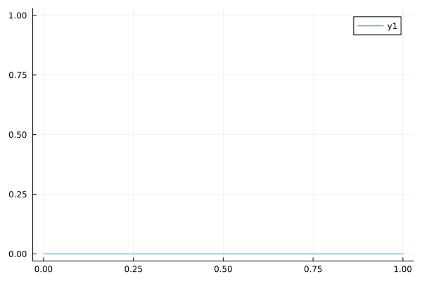

Examples
Sod Shock Tube
The Sod shock tube is a case involving a rightwards travelling shock wave and a leftwards travelling expansion wave. Its initial condition is given by:
\[\left( \begin{aligned} \rho_L \\ P_L \\ u_L \end{aligned} \right) = \left( \begin{aligned} 1.0 \\ 1.0 \\ 0.0 \end{aligned} \right),~ \left( \begin{aligned} \rho_R \\ P_R \\ u_R \end{aligned} \right) = \left( \begin{aligned} 0.125 \\ 0.1 \\ 0.0 \end{aligned} \right)\]
where $\rho$, $P$, and $u$ are the density, pressure, and velocity, the domain is in the range $x=[0,1]$, and the subscripts L and R refer to states to the left and right of an interface initially located at $x=0.5$. While an exact solution for this configuration can be found, this example will focus on setting up an Euler1D simulation to simulate the Sod shock tube.
A simulation is initialized using a set of dictionary key:value pairs describing various aspects of the simulation, including the functions used to describe the initial profiles of density, velocity, pressure, and the ratio of specific heats. A default set of parameters can be obtained using the function [DefaultSimulationParameters()][@ref]:
julia> using Euler1Djulia> simulation_parameters = DefaultSimulationParameters()Dict{String, Any} with 13 entries: "artificial_conductivity_coefficient" => 0.01 "init_pressure_function" => nothing "artificial_viscosity_coefficient" => 1.0 "init_gamma_function" => nothing "number_of_zones" => 1000 "end_position" => 1.0 "maximum_cycles" => 1.0e6 "start_position" => 0.0 "start_time" => 0.0 "init_velocity_function" => nothing "CFL" => 0.2 "minimum_timestep" => 1.0e-7 "init_density_function" => nothing
You may notice that there are several parameters with a value of nothing. These must be supplied before the simulation can be initialized since it is difficult to make reasonable default assumptions. Of particular note are the keys init_density_function, init_velocity_function, init_pressure_function, and init_gamma_function. These refer to functions that describe the inital profiles of density, velocity, pressure, and the ratio of specific heats, respectively. A set of functions to implement the Sod shock tube initial conditions looks like:
julia> function init_density( x ) if ( x < 0.5 ) return 1.0 else return 0.125 end end;julia> function init_velocity( x ) return 0.0 end;julia> function init_pressure( x ) if ( x < 0.5 ) return 1.0 else return 0.1 end end;julia> function init_gamma( x ) return 1.4 end;
The x argument in these functions is the location of where a given variable will be stored. Due to the fact that some variables are zone-centered while others are edge-centered, it should not be assumed that x will have the same value in all functions. Additionally, due to how Julia performs vectorized computations, these functions should not assume anything about the order in which they are executed. i.e., that the n-th function call will always have a certain value of x.
The simulation_parameters dictionary can now be modified to describe the desired initial condition. In this case, this would look like:
julia> simulation_parameters["init_density_function"] = init_density;julia> simulation_parameters["init_velocity_function"] = init_velocity;julia> simulation_parameters["init_pressure_function"] = init_pressure;julia> simulation_parameters["init_gamma_function"] = init_gamma;
The simulation_parameters dictionary has many other keys that can be modified. See DefaultSimulationParameters() for a list of parameters that can be set.
Once all desired parameters have been set, the simulation can be initialized:
julia> init_state = InitializeSimulation( simulation_parameters )Euler1D simulation Start time: 0.0 Current time: 0.0 Last Δt: 1.0e-7 (Min: 1.0e-7) Cycle count: 0 (Max: 1000000) CFL number: 0.2 Number of zones: 1000 Available fields: nzones, nedges, CFL, start_time, viscosity_coefficient, conductivity_coefficient, time, dt, cycles, min_dt, max_cycles, zone_edge, zone_center, zone_length, gamma, mass, density, velocity, pressure, intenergy, speedofsound, viscosity, energy_flux, momentum_rhs, energy_rhs
The init_state variable is a Simulation type that holds information about the simulation.
The functions that describe the initial conditions are not called until InitializeSimulation() is called, at which time they are called at every point in the domain. For these reasons, it is good to be sure that the functions are not computationally heavy.
A common time to examine the Sod shock tube solution is t=0.1. The AdvanceToTime() function can be used to advance the simulation to this time:
julia> end_state = AdvanceToTime( init_state, 0.1; exact=true )where 0.1 is the time to advance to and the exact=true keyword tells the simulation to modify the final time step to stop as close as possible to the final time. If exact=false were supplied instead (or if the exact argument was omitted), the simulation would stop as soon as the current time is greater than the specified stopping time, but no modification of the timestep would be made and so the actual stopping time may differ from the specified stopping time. The size of the difference will depend on the timestep size.
This example wrote out the functions used for initial conditions in full for instructive purposes. However, there is no requirement that the functions be defined in this way. For example, for simple initial conditions, a function could be defined using ternary operators:
julia> init_density( x ) = x < 0.5 ? 1.0 : 0.125; # A function that varies in spacejulia> init_gamma( x ) = 1.4; # A function with a constant value
or even using anonymous functions:
julia> simulation_parameters["init_density_function"] = (x) -> x < 0.5 ? 1.0 : 0.125; # A function that varies in spacejulia> simulation_parameters["init_gamma_function"] = (x) -> 1.4; # A function with a constant value
There is no requirement or advantage to using one method over any other. These are simply alternative ways of defining a function to describe the initial condition.
Callbacks
Often it may be desirable to have the simulation stop at certain points in order to perform some processing, modify simulation state, or write the current simulation state to a file, amongst other things. To facilitate this, Euler1D supports callbacks that can be called based on various criteria. In particular, Euler1D supports callbacks that can be called at a regular cadence based on the number of cycles (timesteps) that have occurred (CycleCallback), at a regular cadence based on an elapsed time (TimeDeltaCallback), or at a fixed list of (potentially irregularly-spaced) times (TimeCallback).
Setting up callbacks is straightforward. Considering the Sod Shock Tube example above, a structure containing information about callbacks can be created using ConfigureSimulationCallbacks():
julia> callbacks = ConfigureSimulationCallbacks(init_state)SimulationCallback(CycleCallback[], TimeCallback[], TimeDeltaCallback[])
From here, one can define functions that should be called at various defined points during the simulation. For illustrative purposes, we will define three callback functions here:
julia> # A callback that will be called at a fixed list of times function MyTimeCallback( state::Simulation{T} ) where { T <: AbstractFloat } println("In MyTimeCallback: Current time is $(state.time.x)") end; # A callback that will be called at a regular number of cyclesjulia> function MyCycleCallback( state::Simulation{T} ) where { T <: AbstractFloat } println("In MyCycleCallback: Current cycle is $(state.cycles.x)") end; # A callback that will be called at a regular temporal cadencejulia> function MyTimeDeltaCallback( state::Simulation{T} ) where { T <: AbstractFloat } println("In MyTimeDeltaCallback: Current time is $(state.time.x)") end;
These three functions can then be assigned to the callbacks structure:
julia> RegisterTimeCallback!( callbacks, MyTimeCallback, Vector{Float64}([0.023, 0.067, 0.096]) ); # Register our time callback to run at t=0.023, 0.067, and 0.096julia> RegisterCycleCallback!( callbacks, MyCycleCallback, 250 ); # Register our cycle callback to run every 250 cyclesjulia> RegisterTimeDeltaCallback!( callbacks, MyTimeDeltaCallback, 0.03 ); # Register our time delta callback to run every 0.03 seconds # We can also register the same callback multiple times.julia> RegisterTimeDeltaCallback!( callbacks, MyTimeDeltaCallback, 0.009, 0.05 ); # Let's register the time delta callback again, but starting at t=0.05 and with a increment of 0.009 secondsjulia> RegisterCycleCallback!( callbacks, MyCycleCallback, 20, 1200 ); # We can also do the same thing with cycle-based callbacks. Here, we'll start at the 1200th cycle and print every 20 cycles
We can then run the simulation and pass our callbacks as an argument:
julia> end_state = AdvanceToTime( init_state, 0.1; exact=true, callbacks=callbacks )In MyCycleCallback: Current cycle is 1 In MyTimeDeltaCallback: Current time is 0.0001690308509456941 In MyCycleCallback: Current cycle is 251 In MyTimeCallback: Current time is 0.023042423974922847 In MyTimeDeltaCallback: Current time is 0.030013143574316222 In MyCycleCallback: Current cycle is 501 In MyTimeDeltaCallback: Current time is 0.05002420979482707 In MyCycleCallback: Current cycle is 751 In MyTimeDeltaCallback: Current time is 0.059033406153544604 In MyTimeDeltaCallback: Current time is 0.06004658746340014 In MyTimeCallback: Current time is 0.06705755438252575 In MyTimeDeltaCallback: Current time is 0.06806693391046942 In MyCycleCallback: Current cycle is 1001 In MyTimeDeltaCallback: Current time is 0.07706663455415017 In MyCycleCallback: Current cycle is 1200 In MyCycleCallback: Current cycle is 1220 In MyCycleCallback: Current cycle is 1240 In MyTimeDeltaCallback: Current time is 0.08603948328916335 In MyCycleCallback: Current cycle is 1251 In MyCycleCallback: Current cycle is 1260 In MyCycleCallback: Current cycle is 1280 In MyCycleCallback: Current cycle is 1300 In MyTimeDeltaCallback: Current time is 0.09004981092362775 In MyCycleCallback: Current cycle is 1320 In MyCycleCallback: Current cycle is 1340 In MyCycleCallback: Current cycle is 1360 In MyCycleCallback: Current cycle is 1380 In MyTimeDeltaCallback: Current time is 0.09505707066511998 In MyTimeCallback: Current time is 0.09605781431554984 In MyCycleCallback: Current cycle is 1400 In MyCycleCallback: Current cycle is 1420 In MyCycleCallback: Current cycle is 1440
As you can see, the output from each of the callbacks is visible. Here, a rather simple example of just printing to the screen was used, but other options such as saving to disk, making plots, or other manipulations are possible.
Plotting Results
This section outlines a few examples of how simulation data can be post-processed to visualize results or perform advanced processing.
There are numerous packages in the Julia ecosystem to handle plotting (e.g. Plots.jl, Makie.jl), writing to disk (e.g. CSV.jl, DataFrames.jl, HDF5.jl), and any other data analysis routine that might be desired. The people developing these packages (and others like them) are immensely talented, and one would be well-advised to utilize their hard work if a package with suitable functionality exists. For this reason, this package actively avoids making assumptions about what a user will want to do with the simulation data after the simulation is complete. This means that there is no built-in functionality to plot simulation data, write it to disk, or perform any other sort of postprocessing. Instead, all simulation outputs are simply elementary Julia types (e.g. Vector{Float64}), and can be manipulated using the usual built-in Julia methods, or by using any suitable package that provides the required functionality.
Line Plot
The simplest case of post-processing data is to just plot profiles of the solution state at the final time in the simulation. Fortunately, all necessary fields can be obtained from the Simulation variable in the form of elementary Julia types. For example, to plot the profile of density from the simulation performed in Sod Shock Tube using the Plots.jl library, one can do
julia> using Plotsjulia> plot( end_state.zone_center, end_state.density );

Similar plots can be made for other zone-centered quantities such as internal energy or pressure.
If plotting edge-centered quantities such as velocity, the end_state.zone_edge variable should be used for the spatial coordinate.
X-T diagrams
It is often useful to look at the evolution of the problem solution as a function of space and time rather than at just a single time instant. X-T (or space-time) diagrams are a useful way to perform this visualization. Gathering the data required to generate this type of plot is a little bit more complicated than the previous examples, however, so this section will walk through an example of how this might be done.
X-T diagrams can be made using quantities such as pressure or density, but Riemann invariants are a particularly powerful way to visualize the movement of waves within the domain. The Euler equations have positive and negative Riemann invariants, corresponding to rightwards- and leftwards-moving waves, respectively:
\[J_\pm = u \pm \frac{2c}{\gamma - 1}\]
where $J_\pm$ is the positive and negative Riemann invariant, $c$ is the speed of sound, and $\gamma$ is the ratio of specific heats. The value of the Riemann invariant is a constant along a wave, and so visualizing isocontours of $J_\pm$ as a function of space and time will correspond to the various waves moving around the domain.
As the above equation makes clear, we will need to combine multiple aspects of the simulation solution in order to compute the Riemann invariants. Additionally, the contour function from Plots.jl that we will use to plot the result assumes that the data it is provided lies on a regular grid, while Euler1D simulations are on a Lagrangian mesh, so we will need to interpolate our data to a regular grid. Fortunately, we can use callbacks to perform both of these tasks as the simulation runs.
The need to interpolate the data onto a regular grid is a specific limitation of the contour function in Plots.jl. Other plotting routines may exist that do not have this requirement, in which case the interpolation step will not be required.
To start, the simulation can be set up identically to the Sod shock tube used in previous examples:
julia> simulation_parameters = DefaultSimulationParameters(); # We'll define our initialization functions using anonymous functions to keep things shortjulia> simulation_parameters["init_density_function"] = (x) -> x < 0.5 ? 1.0 : 0.125;julia> simulation_parameters["init_velocity_function"] = (x) -> 0.0;julia> simulation_parameters["init_pressure_function"] = (x) -> x < 0.5 ? 1.0 : 0.1;julia> simulation_parameters["init_gamma_function"] = (x) -> 1.4;julia> init_state = InitializeSimulation( simulation_parameters )
Now we need to construct our callback to compute the Riemann invariants and interpolate it onto a regular grid. For this, we'll use the grid at $t=0$ as our reference grid:
julia> plot_positions = init_state.zone_center; # The x positions for plottingWe will also need some arrays to store the resulting Riemann invariant values into. For this example, we'll run the simulation to $t=1.0$, while stopping to plot every 0.001 seconds:
julia> sim_end = 1.0; # Run the simulation to t=1.0 secondsjulia> xt_dt = 0.001; # Stop to gather data for the X-T diagram every 0.001 secondsjulia> N_callbacks = Int( div( sim_end, xt_dt ) ) + 1; # This is how many times the callback should be called. We add 1 to account for the first callback at t=0julia> xt_callback_count = 0; # How many times our plotting callback has been called. We'll use this to know where to save the Riemann invariant values for each callback
Using this, we can construct the arrays we'll use the save the Riemann invariants:
julia> plot_J₊ = zeros( N_callbacks, init_state.nzones ); # A matrix of the positive Riemann invariant values in every zone in the simulationjulia> plot_J₋ = zeros( N_callbacks, init_state.nzones ); # A matrix of the negative Riemann invariant values at every zone in the simulationjulia> plot_times = zeros( N_callbacks ); # The times at which the simulation data was saved.
Now, finally, we can set up our actual callback routine
julia> using Interpolationsjulia> function xt_callback( state::Simulation{T} ) where { T <: AbstractFloat } global plot_times[begin + xt_callback_count] = state.time.x # Record our current time # Now compute the Riemann invariants # For this we'll need to interpolate the velocities to zone centers, which we'll do with a simple average uₘ = 0.5 .* ( state.velocity[1:end-1] .+ state.velocity[2:end] ) # Now compute the Riemann invariants J₊ = uₘ .+ ( 2.0 .* state.speedofsound ) ./ ( state.gamma .- 1.0 ) # Positive Riemann invariant J₋ = uₘ .- ( 2.0 .* state.speedofsound ) ./ ( state.gamma .- 1.0 ) # Negative Riemann invariant # Most contour plot functions assume data is on a cartesian grid # However, because the grid zones in the simulation are moving, we'll need to interpolate the data back onto a cartesian grid. # We can use Interpolations.jl for this # First the positive (right-moving) invariant J₊_interp = interpolate( ( state.zone_center, ), J₊, Gridded(Linear()) ) # Set up a linear interpolation of our data J₊_extrap = extrapolate( J₊_interp, Line() ) # Linearly extrapolate if needed. global plot_J₊[begin + xt_callback_count, :] = J₊_extrap( plot_positions ) # Interpolate the simulation data back onto the initial grid and add it to our matrix of data # Now the negative (left-moving) one J₋_interp = interpolate( ( state.zone_center, ), J₋, Gridded(Linear()) ) # Set up a linear interpolation of our data J₋_extrap = extrapolate( J₋_interp, Line() ) # Linearly extrapolate if needed global plot_J₋[begin + xt_callback_count, :] = J₋_extrap( plot_positions ) # Interpolate the simulation data back onto the initial grid and add it to our matrix of data # Finally, increment the counter that tracks the number of times this callback has been called global xt_callback_count += 1 end;
Finally, we can add this callback to our simulation:
julia> callbacks = ConfigureSimulationCallbacks(init_state);julia> RegisterTimeDeltaCallback!( callbacks, xt_callback, xt_dt ); # Register our X-T plotting callback
And now, we can run the simulation:
julia> end_state = AdvanceToTime( init_state, sim_end; exact=true, callbacks=callbacks )With the simulation complete, we can now plot our X-T diagram. First, compute the minimum and maximum Riemann invariant values, as this will help us set the limits for our plot:
julia> minJ = min( minimum( plot_J₊ ), minimum( plot_J₋ ) );julia> maxJ = max( maximum( plot_J₊ ), maximum( plot_J₊ ) );
These values can then be used to create the contour plot
julia> using Plotsjulia> p = contour( plot_positions, plot_times, plot_J₊; c=:black, levels=minJ:0.2:maxJ, cbar=false ); # Positive invariantsjulia> contour!( p, plot_positions, plot_times, plot_J₋; c=:black, levels=minJ:0.2:maxJ ); # Negative invariantsjulia> savefig( p, "sod_xt.svg" );
These lines are responsible for actually creating the contour plot. The first line plots the positive (rightwards-moving) Riemann invariants, and the second line adds a plot for the negative (leftwards-moving) Riemann invariants. The optional arguments are c, which sets the line color, levels, which sets the contour levels to plot, and cbar, which tells the plotting routine not to plot a colorbar as it isn't useful in these contexts. Finally, savefig saves the plot to a file called sod_xt.svg. Running these lines gives us our X-T diagram:

And, voila! You can see the leftwards moving expansion wave and the rightwards moving shock and contact surface. Reflections off of the end walls are also visible, as are interactions between different waves.
The levels argument, particularly the step size of 0.2, was tuned to produce a good looking plot for this case. You will probably need to adjust this for other configurations.
The plot colors were set to black as this makes a uniform looking plot. However, you might try plotting the two with different colors (say, c=:red in one plot) as this will show how the positive and negative Riemann invariants correspond to left- and right-moving waves.
You might notice that things like the material interface look a little wider than might be expected. Try playing around with the artificial_viscosity_coefficient and artificial_conductivity_coefficient values to see what effect these parameters have.
Modifying Problem State
There may be cases where it is desirable to stop and modify the problem state part way through a simulation. For example, to add another shock wave. This can be done using the UpdateSimulationState!() function. This function takes four arguments that are Functions describing the new problem density, velocity, pressure, and ratio of specific heats. However, in this case the functions have a slightly different signature:
function my_new_state( x, oldValue )
...
endNotice that there is now an oldValue argument. This will hold the current value of the variable at the position x. If you don't want to modify anything, you can just return oldValue from this function.
As a trivial example, let's say we want to modify the example from the Line Plot section to add a sinusoidal profile to the existing density, set the velocity to zero, and leave everything else untouched. Our functions might look like
julia> function update_density( x, oldValue ) return 0.05 * sin( 20 * pi * x ) + 0.05 + oldValue # Need to add a value to make sure density doesn't go to zero end;julia> function update_velocity( x, oldValue ) return 0.0 end;julia> function update_pressure( x, oldValue ) return oldValue end;julia> function update_gamma( x, oldValue ) return oldValue end;
With these functions we can now update the problem state:
julia> UpdateSimulationState!( end_state, update_gamma, update_density, update_velocity, update_pressure )and if we plot density again, we'll see the density field has been updated:
julia> plot( end_state.zone_center, end_state.density );
and the velocity field is now zero everywhere:
julia> plot( end_state.zone_edge, end_state.velocity );
Functions like these could, for example, be set up to run within a TimeCallback in order to update the problem state at a known time in order to, for example, add another shock wave.